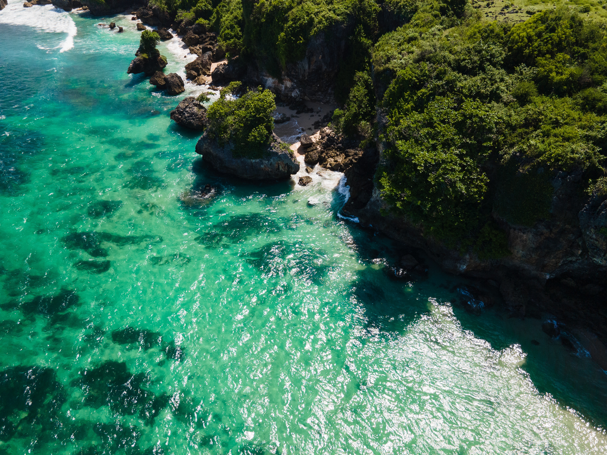

A beach holiday is the perfect excuse to escape the daily grind. And whether you’re in the mood for a stroll on a windswept beach leading up to an ancient castle, relaxing on a white sandy slice of paradise in the middle of the Indian Ocean or taking a breather after catching a few early morning waves, there are beaches for just about everyone.
If you’re not sure where you want to head, we’ve rounded up some of the most beautiful beaches in the world for a bit of inspiration.
1. Boracay White Beach, Philippines

White Beach is perfect for those who love swimming, thanks to its flat, calm waters. This 3 mile-long stretch is considered to be one of the most popular beaches in Boracay and offers everything from beach activities and restaurants to nightlife and hotels. Accommodation is broken up into three sections along the beach, Stations 1, 2 and 3, and range from luxury, mid-level and budget respectively.
Getting there: Boracay Island is accessible by plane from Manila. Flights take roughly one hour, connecting in Caticlan (followed by a 10-minute ferry ride) or Kalibo (followed by a two-hour bus ride). As the island's main attraction, this Boracay beach is one of the top tourist spots in the Philippines.
After its rehabilitation by the government, Boracay's White Beach is back with a beautiful make-over. The beach is more stunning and captivating than before. There’s a lot more space to bask under the sun and stroll while being serenaded by the sound of the ocean.
Despite being one of the country’s most visited tourist destinations, this Boracay beach never loses its charisma. There’s something about its long stretch of white beach and its unbeatable, magical sunsets that makes you go back over and over again.
2. Blue Lagoon, Ölüdeniz, Turkey
The town name Oludeniz translates to “dead sea” (a result of its calm waters) and is home to the Blue Lagoon, which offers white sands and warm, turquoise waters. Visitors can expect a more relaxed atmosphere (you won’t find a boisterous nightlife here), and a number of activities to do on and around the lagoon, including paragliding and boating.
Getting there: Ölüdeniz is a 20-minute mini-bus ride from Fethiye. Flights from Istanbul to Fethiye take roughly an hour and a half.
This Lagoon is the much photographed gem of Turkey's Southern Coast, famous for its ever varying shades of turquoise and azure, and soft sands.
Separated from the main beach by a sand bar and narrow channel, the lagoon beckons you into its shallow waters. You can immerse yourself, paddle barefoot along the shoreline or swim across to the tiny island at the mouth of the lagoon. Here no boats are allowed in to disrupt the peace?.canoes and paddle-boats can be hired to explore the rocky shores of the inner lagoon and search for mussels or use your snorkel to discover the myriad of tiny fish which start their life in these sheltered waters .
Throughout the day the scents of the peninsula's flora become stronger ?Myrtle, Laurel , Tamarisk and Pine. All basic facilities are available. There is a small entrance charge to the National Park
If you find the atmosphere here too relaxing and need a fix you can take your pick of one the campsite beaches on the inner side of the lagoon?.great Turkish food, henna tattoos, hair plats, massage and many more amusements?. plus a private beach?some also offer accommodation.
3. Na Pali Coast, Kauai, Hawaii
Spanning 17 miles along Kauai’s North Shore, the Napali Coast is a sacred place defined by extraordinary natural beauty. These emerald-hued cliffs with razor-sharp ridges tower above the Pacific Ocean, revealing beautiful beaches and waterfalls that plummet to the lush valley floor. The rugged terrain appears much as it did centuries ago when Hawaiian settlements flourished in these deep, narrow valleys, existing only on the food they could grow and the fish they could catch.
There are many ways to explore the Napali Coast, but the safest access and best views are found by sea or by air. Boat tours depart from Port Allen on the West Side, and during the summer months, guided kayaking trips bring you up-close to soaring cathedral cliffs. When conditions are right, raft tours are available to guide you to hidden sea caves and remote beaches.
Aerial tours, most lifting off from Lihue Airport, are perhaps the best way to grasp the magnitude of the Napali Coast. You’ll also get a front-row seat to scenic areas that are largely inaccessible by land or water, like majestic Manawaiopuna Falls, a backdrop in the film "Jurassic Park." Whichever tour you choose, the natural splendor of the Napali Coast will leave a deep impression on your soul.